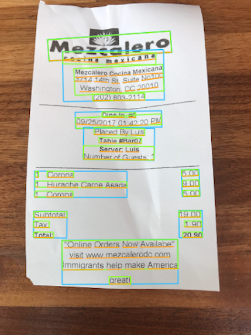
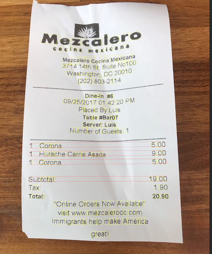
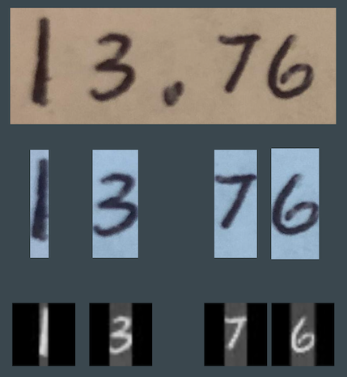
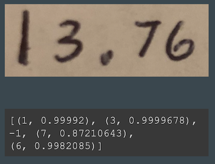
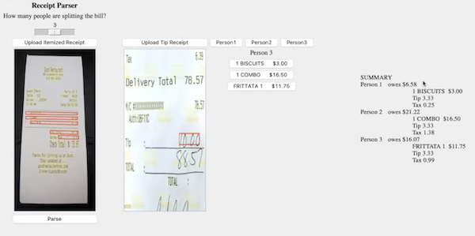

57% of millennials ask for combined checks when dining out
65% use cash apps to exchange money between friends
Why we made it
The problem that many face today when going out to eat or splitting any expense is that people don’t always end up paying their fair share.
We want to make it easier to split bills when you go to restaurants with friends or family.
Our receipt parsing application can itemize all of the orders on the receipt and take tax and tip into consideration before determining how much each person owes.
Such an application for computer vision can extend beyond splitting bills at restaurants and can be used with any expense where a physical receipt is given and would like to be split.
Resources
Download the code:
here
Presentation:
here
To run this code locally you must have python and tensorflow installed.
If you do not want to download these or if you are using a non-Intel Mac try running the code in a Google colab python notebook.
How it works
Under the hood of our final project we apply Google's Vision API as well as image processing techniques and machine learning to give us a seemingly simple application that speeds up a common situation people find themselves in.
Like any good project, we had our share of obstacles to overcome to get to this point.
Where we started
We decided to utilize google vision, an api to read data from the receipt, however there were limitations we had to account for.
Google vision would give us pieces of the receipt as text as shown by the boxes in the image, but as you can see there is no linking between item name and it's corresponding price.
There we reached our first major hurdle: How would we link each item to its corresponding price?
Linking the items
To accomplish the linking of items we first identified the location of the word "subtotal" or its equivalent on the receipt
We then checked to the right for another value which would be the dollar amount of the subtotal.
Then we would look up from there to find itemized prices and to the left of each to find the name, allowing us to link these items.
Currently this approach relies on the receipt being positioned vertically in the image but eventually we could use edge detection to find where the receipt is on the image and rotate it so that it is vertical.
Finding the handwritten tip
The first thing we had to do was find the tip.
Similarly to how we linked the items we looked for an image in relation to a landmark provided by the Google Vision API, in this case "tip".
However, for our next step we would need to split the digits in the cropped image of the tip so further processing would be required.
We decided to use a simple algorithm where we would split the image on the white space between each digit.
Finally, we applied some contrast and brightness processing on this area in order to make the handwritten characters stand out more for our model.
As an aside, this digit-splitting algorithm should be replaced with a more advanced one in the future as overlapping digits will not be read correctly.
Machine learning and optical character recognition
Optical character recognition, or simply a computer reading an image of a character, has been a well studied problem and is done very accurately nowadays.
We wanted to try and create our own machine learning model in order to read in the handwritten tip so it could be taken into account for the final split of the bill.
Eventually we wanted to use a model based on the one outlined in this
study
but first we implemented a simpler model that can be found on our
github
to verify that it could work.
Satisfied that our digit-splitting algorithm generated images would be suitable, we improved our model to follow the study more closely which yielded far more accurate results.
GUI and application
Initially, one of our goals was to have all of the inner workings we have covered above confined to an API that could be used within a webapp but a few factors did not allow for this. In order to host this as an API we would need a server to do it and while there are many options like AWS' lambda functions that offer some free hits to do this, we would also need the function to have keras installed which runs our machine learning model. Though this is possible through the use of correctly configured VMs through AWS' EC2 we decided to hold off on this to decrease the complexity of this project and instead chose to run the program locally. Therefore we added a simple GUI using python libraries to bring us to our receipt parser's current form. While, it is not the prettiest of GUI's it is enough to showcase the utility of our project.

Output of Google Vision API

Items linked to prices

Tip split into individual digits

Output of OCR model

Demo of receipt parser